Data Structures and Algorithm
- Data Structures and Algorithm
- Priority Queue
- Disjoint Set
Recurrence Relations
- T(n) = T(n-1) + O(1) = O(n)
- T(n) = T(n/2) + O(1) = O(logn)
- T(n) = T(n-1) + O(n) = O(n^2)
- T(n) = T(n-1) + O(nk) = O(n^(k+1))
- T(n) = 2T(n/2) + O(n) = O(nlogn)
- T(n) = T(n/2) + O(n) = O(n)
- T(n) = 2T(n/2) + O(1) = O(n)
- T(n) = 2T(n-1) + O(1) = O(2^n)
Binary Search
- Time complexity: O(logn)
- Preconditions:
- Array is of size n
- Array is sorted
- Postconditions:
- If element is in array:
A[left] = key
- If element is in array:
- Loop invariant:
A[left] <= key <= A[right]- (right - left) <= n/2^k in iteration k
public int search(int A[], int key, int n) {
int left = 0;
int right = n - 1;
while (left < right) {
// int mid = (left + right) / 2 can lead to integer overflow
int mid = left + (right - left) / 2;
if (key <= A[mid]) {
right = mid;
} else {
left = mid + 1;
}
}
return (A[left] == key ? left : -1);
}
Peak Finding
- Output a local maximum in A, where A[i - 1] <= A[i] and A[i + 1] <= A[i]
- Time complexity: O(logn)
-
Invariant:
- If we recuse in the right half, then there exists a peak in the right half
- There exists a peak in the range [begin, end]
- Every peak in [begin, end] is a peak in [1, n]
-
T(n) = T(n/2) + θ(1) = O(logn)
public int findPeak(int A[], int n) {
// if right of mid is larger, recurse on right
if (A[n / 2 + 1] > A[n / 2]) {
return findPeak(Arrays.copyOfRange(A, n / 2 + 1, n + 1), n / 2)
// if left of mid is larger, recurse on left
} else if (A[n / 2 - 1] > A[n / 2]) {
return findPeak(Arrays.copyOfRange(A, 0, n / 2), n / 2)
} else {
return n / 2;
}
}
Sorting
BubbleSort
- Invariant:
- At the end of iteration i, the biggest j items are correctly sorted in the final j positions of the array.
- Best: O(n), when array is already sorted
- Worst: O(n^2), when array is reverse sorted
- Stable
- Description:
- For n loops, if A[j] > A[j + 1], swap(A[j], A[j + 1])
- 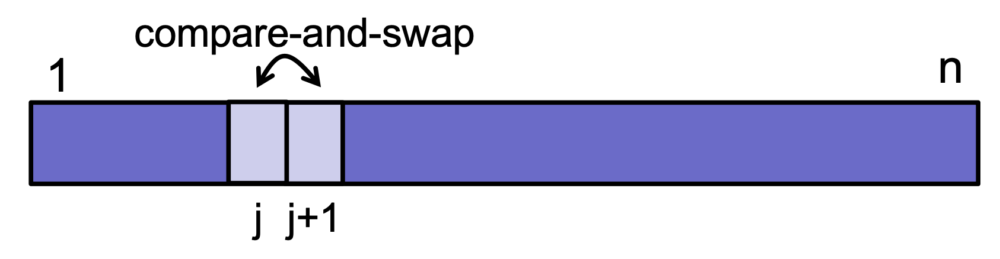
void bubbleSort(int arr[], int n) {
int i, j, temp;
boolean swapped;
for (i = 0; i < n - 1; i++) {
swapped = false;
for (j = 0; j < n - i - 1; j++) {
if (arr[j] > arr[j + 1]) {
// Swap arr[j] and arr[j+1]
temp = arr[j];
arr[j] = arr[j + 1];
arr[j + 1] = temp;
swapped = true;
}
}
// If no two elements were
// swapped by inner loop, then break
if (swapped == false)
break;
}
}
SelectionSort
- Invariant:
- At the end of iteration j: the smallest j items are correctly sorted in the first j positions of the array.
- Best: O(n^2)
- Worst: O(n^2)
- Not stable
- Description:
- For n loops, find minimum element A[j] in A[j..n], swap(A[j], A[k])
- 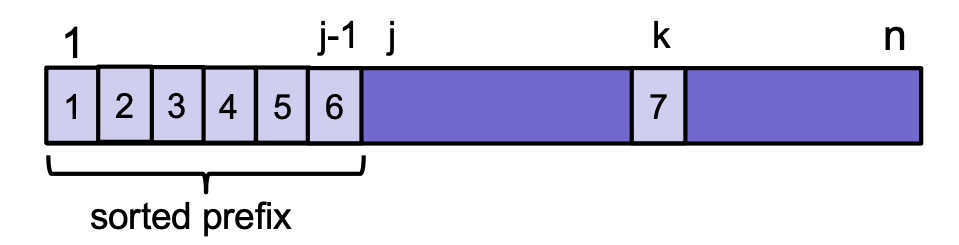
void selectionSort(int arr[], int n) {
int min_idx = 0;
// One by one move boundary of unsorted subarray
for (int i = 0; i < n - 1; i++) {
// Find the minimum element in unsorted array
min_idx = i;
for (int j = i + 1; j < n; j++) {
if (arr[j] < arr[min_idx])
min_idx = j;
}
// Swap the found minimum element with the first element
if (min_idx != i)
swap(arr[min_idx], arr[i]);
}
}
InsertionSort
- Invariant:
- At the end of iteration j: the first j items in the array are in sorted order.
- Best: O(n), when array is already sorted
- Worst: O(n^2), when array is reverse sorted
- Stable
- Description:
- For n loops, insert key into the sorted array A[1 .. j - 1]
- 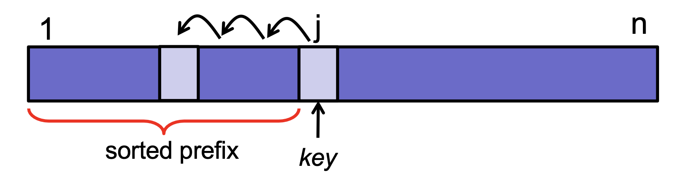
void insertionSort(int arr[]) {
int n = arr.length;
for (int i = 1; i < n; ++i) {
int key = arr[i];
int j = i - 1;
/* Move elements of arr[0..i-1], that are
greater than key, to one position ahead
of their current position */
while (j >= 0 && arr[j] > key) {
arr[j + 1] = arr[j];
j = j - 1;
}
arr[j + 1] = key;
}
}
MergeSort
- Best:
O(n logn) - Worst:
O(n logn) - Stable
- Memory:
O(n logn) - Description:
- Divide: split array into two halves
- Recurse: sort the two halves
- Combine: merge the two sorted halves

- Use InsertionSort instead for n < 1024
void merge(int arr[], int l, int m, int r) {
// Find sizes of two subarrays to be merged
int n1 = m - l + 1;
int n2 = r - m;
// Create temp arrays
int L[] = new int[n1];
int R[] = new int[n2];
// Copy data to temp arrays
for (int i = 0; i < n1; ++i)
L[i] = arr[l + i];
for (int j = 0; j < n2; ++j)
R[j] = arr[m + 1 + j];
// Merge the temp arrays
// Initial indices of first and second subarrays
int i = 0, j = 0;
// Initial index of merged subarray array
int k = l;
while (i < n1 && j < n2) {
if (L[i] <= R[j]) {
arr[k] = L[i];
i++;
}
else {
arr[k] = R[j];
j++;
}
k++;
}
// Copy remaining elements of L[] if any
while (i < n1) {
arr[k] = L[i];
i++;
k++;
}
// Copy remaining elements of R[] if any
while (j < n2) {
arr[k] = R[j];
j++;
k++;
}
}
void mergeSort(int arr[], int l, int r) {
if (l < r) {
// Find the middle point
int m = l + (r - l) / 2;
// Sort first and second halves
mergeSort(arr, l, m);
mergeSort(arr, m + 1, r);
// Merge the sorted halves
merge(arr, l, m, r);
}
}
QuickSort
- Invariant:
- At the end of every loop iteration,
- For every i < low: B[i] < pivot
- For every j > high: B[j] > pivot
- Best:
O(n logn), when median element is chosen as pivot - Worst:
O(n^2), when first element is chosen as pivot/ all elements are the same - Not stable
- Description:

- Divide: Partition the array into two sub-arrays around a pivot x such that elements in lower subarray ≤ x ≤ elements in upper sub-array.
- Conquer: Recursively sort the two sub-arrays.
- Combine: Trivial, do nothing.
void quickSort(int[] arr, int low, int high) {
if (low < high) {
// pi is partitioning index, arr[pi]
// is now at right place
int pi = partition(arr, low, high);
// Separately sort elements before
// partition and after partition
quickSort(arr, low, pi - 1);
quickSort(arr, pi + 1, high);
}
}
Partition
- Invariant:
- A[high] > pivot at the end of each loop
- At the end of every loop iteration
- For all i >= high, A[i] > pivot
- For all 1 < j < low, A[j] < pivot
- Time complexity:
O(n)
int partition(int[] arr, int low, int high) {
// Choosing the pivot
int pivot = arr[high];
// Index of smaller element and indicates
// the right position of pivot found so far
int i = (low - 1);
for (int j = low; j <= high - 1; j++) {
// If current element is smaller than the pivot
if (arr[j] < pivot) {
// Increment index of smaller element
i++;
swap(arr, i, j);
}
}
swap(arr, i + 1, high);
return (i + 1);
}
QuickSelect
- Invariant:
- After partioning, arr[partition] is now at right place
- Time complexity:
O(n) - Description: Find the k-th smallest element in an unordered list
- partition the array
- if partition is at position k, the partition is the k-th smallest element
- else continue searching in the correct half
// ASSUMPTION: all elements in arr[] are distinct
int kthSmallest(int[] arr, int low,
int high, int k) {
// find the partition
int partition = partition(arr, low, high);
// if partition value is equal to the kth position, return value at k
if (partition == k - 1) {
return arr[partition];
}
// if partition value is less than kth position, search right side of the array
else if (partition < k - 1) {
return kthSmallest(arr, partition + 1, high, k);
}
// if partition value is more than kth position, search left side of the array
else {
return kthSmallest(arr, low, partition - 1, k);
}
}
Trees
Binary Search Trees
- All in left sub-tree < key < all in right sub-tree
Height
- Number of edges on longest path from root to leaf
h(v) = 0(if v is a leaf)h(v) = max(h(v.left), h(v.right)) + 1- Time complexity:
O(logn)
int height() {
int leftHeight = -1;
int rightHeight = -1;
if (leftTree != null) {
leftHeight = leftTree.height();
}
if (rightTree != null) {
rightHeight = rightTree.height();
}
return max(leftHeight, rightHeight) + 1;
}
Search
- Worst case:
O(n), (when n = h) -
Time complexity:
O(h) -
searchMax()
TreeNode searchMax() {
if (rightTree != null) {
return rightTree.searchMax();
} else {
return this;
}
}
- searchMin()
TreeNode searchMin() {
if (leftTree != null) {
return leftTree.searchMin();
} else {
return this;
}
}
- search(int queryKey)
public TreeNode search(int queryKey){
if (queryKey < key) {
if (leftTree != null) {
return leftTree.search(key);
} else {
return null;
}
} else if (queryKey > key) {
if (rightTree != null) {
return rightTree.search(key);
} else {
return null;
}
} else {
return this; // Key is here!
}
}
Insert
void insert(int insKey, int intValue) {
if (insKey < key) {
if (leftTree != null) {
leftTree.insert(insKey);
} else {
leftTree = new TreeNode(insKey,insValue)
}
} else if (insKey > key) {
if (rightTree != null) {
rightTree.insert(insKey);
} else {
rightTree = new TreeNode(insKey, insValue);
}
} else {
return; // Key is already in the tree!
}
}
Traversals
Inorder Traversal
- Left, self, right
- Running time:
O(n)
void inOrder(Node node) {
if (node == null)
return;
// First recur on left child
inOrder(node.left);
// Then print the data of node
System.out.print(node.key + " ");
// Now recur on right child
inOrder(node.right);
}
Preorder Traversal
- Self, left, right
- Running time:
O(n)
void preOrder(Node node) {
if (node == null)
return;
// Print the data of node
System.out.print(node.key + " ");
// Then recur on left child
preOrder(node.left);
// Now recur on right child
preOrder(node.right);
}
Postorder Traversal
- Left, right, self
- Running time:
O(n)
void postOrder(Node node) {
if (node == null)
return;
// First recur on left child
postOrder(node.left);
// Then recur on right child
postOrder(node.right);
// Now print the data of node
System.out.print(node.key + " ");
}
Delete
- Successor
- Running time:
O(h) - Idea:
- Search for key in the tree.
- If (result > key), then return result.
- If (result <= key), then search for successor of result.
- Case 1: node has a right child
- Case 2: node has no right child
- Running time:
public TreeNode successor() {
if (rightTree != null) {
return rightTree.searchMin();
}
TreeNode parent = parentTree;
TreeNode child = this;
while ((parent != null) && (child == parent.rightTree)) {
child = parent;
parent = child.parentTree;
}
return parent;
}
- Delete
- Running time:
O(h) - Case 1: no children
- Remove v
- Case 2: 1 child
- Remove v
- Connect child(v) to parent(v)
- Case 3: 2 children
- x = successor(v)
- Delete(x)
- Remove v
- Connect x to left(v), right(v), parent(v)
- Running time:
Balanced Trees
- BST is balanced if
h = O(logn) - All operations run in
O(logn)time - Maxmimum height:
h < 2logn -
Mininimum nodes:
n > 2^(h/2) -
In every node v, store height (augment)
- On insert and delete, update height:
height = max(left.height, right.height) + 1
- On insert and delete, update height:
-
Define Invariant
- A node v is height-balanced if
|v.left.height - v.right.height| <= 1 - A BST is height-balanced if every node is height-balanced
- A node v is height-balanced if
-
Maintain balance
// assume v has left != null
void rightRotate(TreeNode v) {
TreeNode w = v.left;
w.parent = v.parent;
v.parent = w;
v.left = w.right;
w.right = v;
}
// assume v has right != null
void leftRotate(TreeNode v) {
TreeNode w = v.right;
w.parent = v.parent;
v.parent = w;
v.right = w.left;
w.left = v;
}
If v is out of balanced and left-heavy:
- Case 1: v.left is balanced -> rightRotate(v) 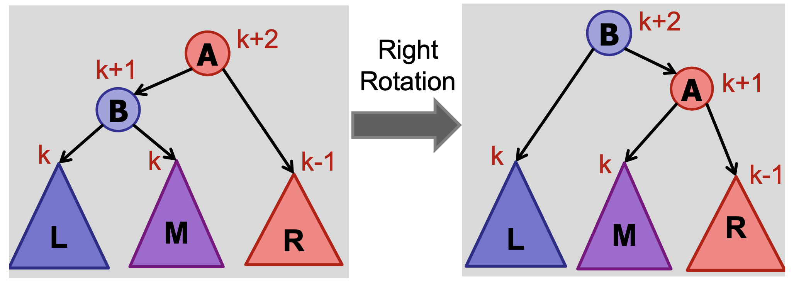
- Case 2: v.left is left-heavy -> rightRotate(v)

- Case 3: v.left is right-heavy -> leftRotate(v.left), rightRotate(v)
 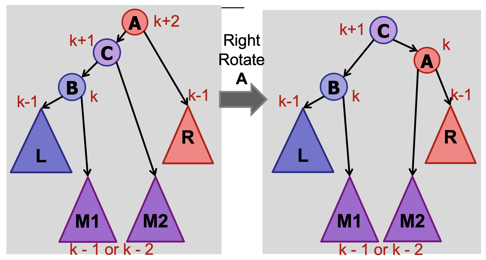
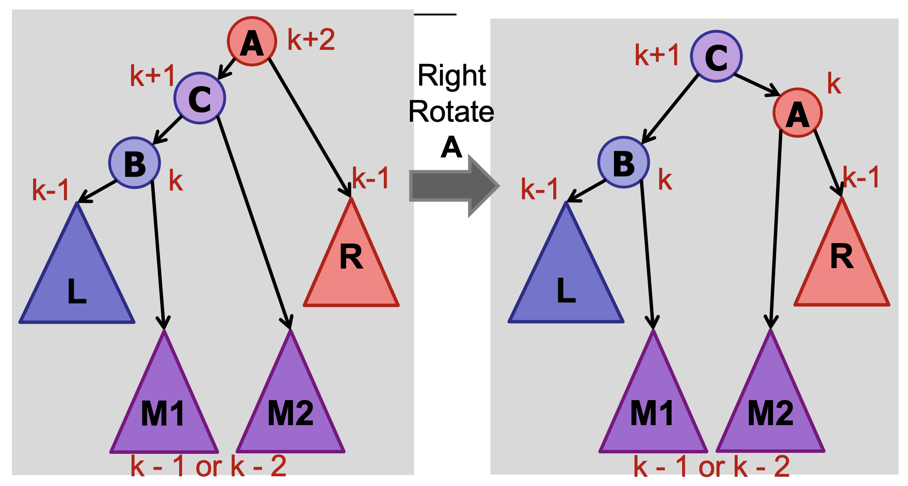
If v is out of balanced and right-heavy:
- Case 1: v.right is balanced -> leftRotate(v)
- Case 2: v.right is left-heavy -> leftRotate(v)
- Case 3: v.right is right-heavy -> rightRotate(v.right), leftRotate(v)
import java.util.TreeSet;
TreeSet<IntegerNode> leftHalf;
TreeSet<IntegerNode> rightHalf;
void rebalance() {
int leftSize = this.leftHalf.size();
int rightSize = this.rightHalf.size();
int diff = Math.abs(leftSize - rightSize);
if (diff > 1) {
if (leftSize > rightSize) {
// Left is bigger, move the biggest item to right
this.rightHalf.add(this.leftHalf.pollLast());
} else {
// Right is bigger, move the smallest item to left
this.leftHalf.add(this.rightHalf.pollFirst());
}
}
}
AVL
Insert
-
Summary:
- Insert key in BST
- Walk up tree:
- At every step, check for balance
- If out-of-balance, use rotations to rebalance and return
-
Key observation:
- Only need to fix lowest out-of-balance node
- Only need at most two rotations to fix
Delete
- If v has two children, swap it with its successor
- Delete node v from binary tree (and reconnect children)
- For every ancestor of the deleted node:
- Check if it is height-balanced
- If not, perform a rotation
- Continue to the root
- Summary:
- Delete key from BST
- Walk up tree:
- At every step, check for balance
- If out-of-balance, use rotations to rebalance
- continue to root
- Key observation:
- Needs at most O(logn) rotations
import java.util.*;
import java.io.*;
class Node {
int key, height;
Node left, right;
Node (int d) {
key = d;
height = 1;
}
}
class AVLTree {
Node root;
int height (Node N) {
if (N == null)
return 0;
return N.height;
}
int max (int a, int b) {
return (a > b) ? a : b;
}
Node rightRotate (Node y) {
Node x = y.left;
Node T2 = x.right;
x.right = y;
y.left = T2;
y.height = max (height (y.left), height (y.right)) + 1;
x.height = max (height (x.left), height (x.right)) + 1;
return x;
}
Node leftRotate (Node x) {
Node y = x.right;
Node T2 = y.left;
y.left = x;
x.right = T2;
x.height = max (height (x.left), height (x.right)) + 1;
y.height = max (height (y.left), height (y.right)) + 1;
return y;
}
int getBalance (Node N) {
if (N == null)
return 0;
return height (N.left) - height (N.right);
}
Node insert (Node node, int key) {
if (node == null)
return (new Node (key));
if (key < node.key)
node.left = insert (node.left, key);
else if (key > node.key)
node.right = insert (node.right, key);
else
return node;
node.height = 1 + max (height (node.left), height (node.right));
int balance = getBalance (node);
if (balance > 1 && key < node.left.key)
return rightRotate (node);
if (balance < -1 && key > node.right.key)
return leftRotate (node);
if (balance > 1 && key > node.left.key) {
node.left = leftRotate (node.left);
return rightRotate (node);
}
if (balance < -1 && key < node.right.key) {
node.right = rightRotate (node.right);
return leftRotate (node);
}
return node;
}
}
Tries
- Cost of comparing two strings in a tree: O(hL)
- Cost in trie: O(L)
- Space for storing a try: O(size of text * overhead)
Dynamic Order Statistics
- Select(k) : finds the node with rank k
// augmented tree with weight
// O(logn)
Node select(k) {
rank = m_left.weight + 1;
if (k == rank) {
return v;
} else if (k < rank) {
return m_left.select(k);
} else if (k > rank) {
return m_right.select(k–rank);
}
}
// in-order traversal method
// O(n)
Node kthSmallest(int k) {
Result result = new Result(0, null);
inOrderTraversal(root, k, result);
return result.result;
}
void inOrderTraversal(Node node, int k, Result result) {
if (node == null || result.count >= k) {
return;
}
inOrderTraversal(node.left, k, result);
result.count++;
if (result.count == k) {
result.result = node;
return;
}
inOrderTraversal(node.right, k, result);
}
class Result {
int count;
Node result;
Result(int count, Node result) {
this.count = count;
this.result = result;
}
}
- Rank(v) : computes the rank of a node v
// augmented tree with weight
// O(logn)
int rank(TreeNode node) {
rank = node.left.weight + 1;
while (node != null) {
if (node.parent.left == node) {
continue;
} else {
rank += node.parent.left.weight + 1;
}
node = node.parent;
}
return rank;
}
// recursion method
// worst case: O(n)
int rank(TreeNode node, int x) {
if (node == null) {
return 0;
}
if (node.value <= x) {
return 1 + rank(node.left, x) + rank(node.right,x);
} else {
return rank(node.left, x)
}
}
Interval Trees
- Augment tree with maximum endpoint in subtree 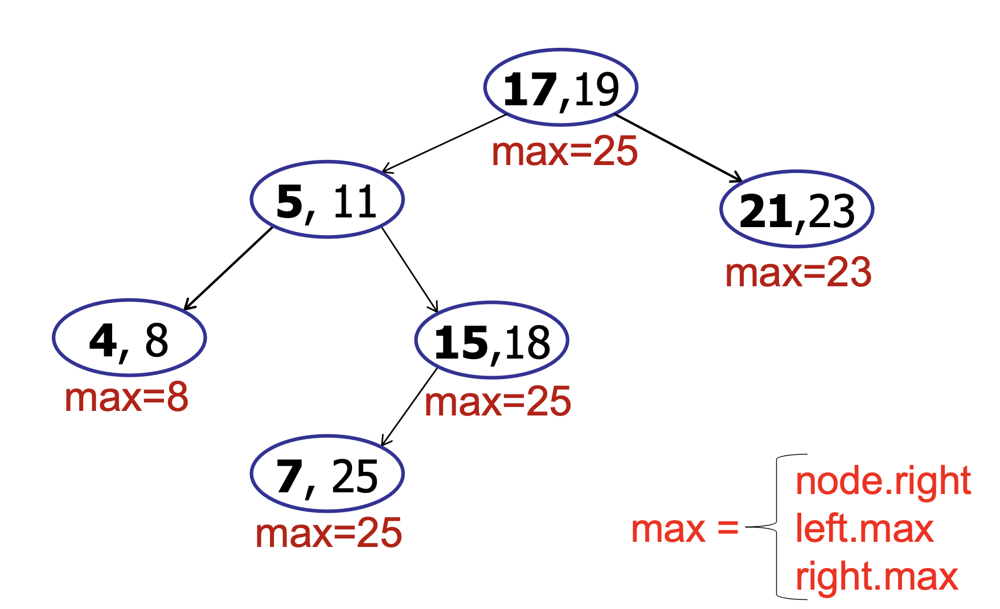
class Node {
int[] interval;
int maxEnd;
Node left, right;
int height;
Node(int[] interval) {
this.interval = interval;
this.maxEnd = interval[1];
this.left = this.right = null;
this.height = 1;
}
}
Insert
class IntervalTree {
private int height(Node node) {
return (node == null) ? 0 : node.height;
}
private int maxEnd(Node node) {
return (node == null) ? Integer.MIN_VALUE : node.maxEnd;
}
private int getBalance(Node node) {
return (node == null) ? 0 : height(node.left) - height(node.right);
}
private Node insert(Node root, int[] interval) {
if (root == null) {
return new Node(interval);
}
if (interval[0] < root.interval[0]) {
root.left = insert(root.left, interval);
} else {
root.right = insert(root.right, interval);
}
root.height = Math.max(height(root.left), height(root.right)) + 1;
root.maxEnd = Math.max(root.interval[1], Math.max(maxEnd(root.left), maxEnd(root.right)));
int balance = getBalance(root);
// Left Heavy
if (balance > 1) {
if (interval[0] < root.left.interval[0]) {
return rotateRight(root);
} else {
root.left = rotateLeft(root.left);
return rotateRight(root);
}
}
// Right Heavy
if (balance < -1) {
if (interval[0] > root.right.interval[0]) {
return rotateLeft(root);
} else {
root.right = rotateRight(root.right);
return rotateLeft(root);
}
}
return root;
}
}
Interval Search
- Find interval containing x
- Running time: O(logn)
boolean isInInterval(Node c, int x) {
return x >= c.interval[0] && x <= c.interval[1];
}
int[] intervalSearch(int x) {
Node c = root;
while (c != null && !isInInterval(c, x)) {
if (c.left == null) {
c = c.right;
} else if (x > c.left.maxEnd) {
c = c.right;
} else {
c = c.left;
}
}
return c.interval;
}
- All-Overlaps:
- List all intervals that overlap with point
- Running time if there are k overlapping intervals: O(k logn)
- Repeat until no more intervals:
- Search for interval.
- Add to list.
- Delete interval.
- Repeat for all intervals on list:
- Add interval back to tree.
1D Range Trees
- Strategy:
- Use a binary search tree.
- Store all points in the leaves of the tree. (Internal nodes store only copies.)
- Each internal node v stores the MAX of any leaf in the left sub-tree.
Query
- Invariant:
- The search interval for a left-traversal at node v includes the maximum item in the subtree rooted at v.
- Algorithm:
- Find split node, takes O(logn)
- Do left traversal
- Do right traversal
- Query time complexity: O(k + logn), where k is number of points found
- Preprocessing (buildtree) time complexity: O(n logn)
- Total space complexity: O(n)
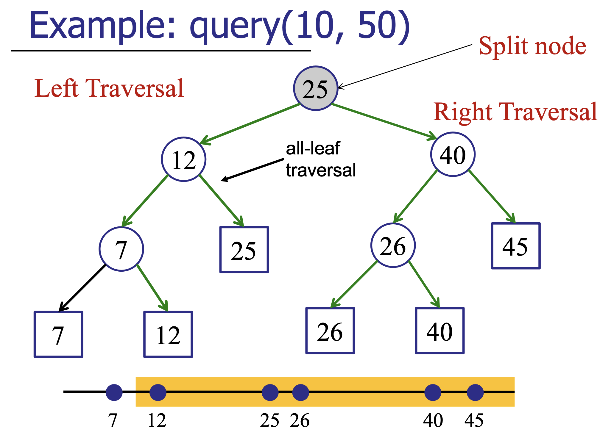
Node FindSplit(int low, int high) {
Node v = root;
done = false;
while (!done) {
if (high <= v.key) {
v = v.left;
} else if (low > v.key) {
v = v.right;
} else {
done = true
}
}
return v;
}
// LeftTraversal either:
// 1. Output all right sub-tree and recurse left.
// 2. Recurse right.
void LeftTraversal(Node v, int low, int high) {
boolean isInRange = low <= v.key;
boolean isLeafNode = v.left == null && v.right == null;
if (isLeafNode && isInRange) {
System.out.println(v.key);
}
if (isInRange) {
// if in range, take the all of right subtree's leafs
AllLeafTraversal(v.right);
LeftTraversal(v.left, low, high);
} else {
LeftTraversal(v.right, low, high);
}
}
void RightTraversal(Node v, int low, int high) {
boolean isInRange = v.key <= high;
boolean isLeafNode = v.left == null && v.right == null;
if (isLeafNode && isInRange) {
System.out.println(v.key);
}
if (isInRange) {
// if in range, take the all of left subtree's leafs
AllLeafTraversal(v.left);
RightTraversal(v.right, low, high);
} else {
RightTraversal(v.left, low, high);
}
}
void AllLeafTraversal(Node v) {
if (v == null) {
return;
}
// only leaf nodes are printed
if (v.left == null && v.right == null) {
System.out.println(v.key);
}
AllLeafTraversal(v.left);
AllLeafTraversal(v.right);
}
void Query(low, high) {
Node v = FindSplit(low, high);
LeftTraversal(v.left, low, high);
RightTraversal(v.right, low, high);
}
2D Range Trees
- Build an x-tree using only x-coordinates.
- For every node in the x-tree, build a y-tree out of nodes in subtree using only y-coordinates.
- Query time: O((logn)^2 + k)
- O(logn) to find split node
- O(logn) recursing steps
- O(logn) y-tree-searches of cost O(logn)
- O(k) enumerating output
- Space complexity: O(n logn)
- Each point appears in at most one y-tree per level
- There are O(log n) levels
- Query cost: O((logn)^d + k)
- buildTree cost: O(n (logn)^d-1)
- Space: O(n (logn)^d-1)
Priority Queue
| Return Type | Operation | Description |
|---|---|---|
| void | insert(Key k, Priority p) | insert k with priority p |
| Data | extractMin() | remove key with min. priority |
| void | decreaseKey(Key k, Priority p) | reduce the priority of key k to priority p |
| boolean | contains(Key k) | whether queue contains key k |
| boolean | isEmpty() | whether queue is empty |
- Sorted array
- Insert: O(n)
- extractMax: O(1)
- Unsorted array
- insert: O(1)
- extractMax: O(n)
- AVL tree (indexed by priority)
- insert: O(logn)
- extractMax: O(logn)
- AVL tree and dictionary
- contains: O(1)
- decreaseKey: O(logn)
Binary (Max) Heaps
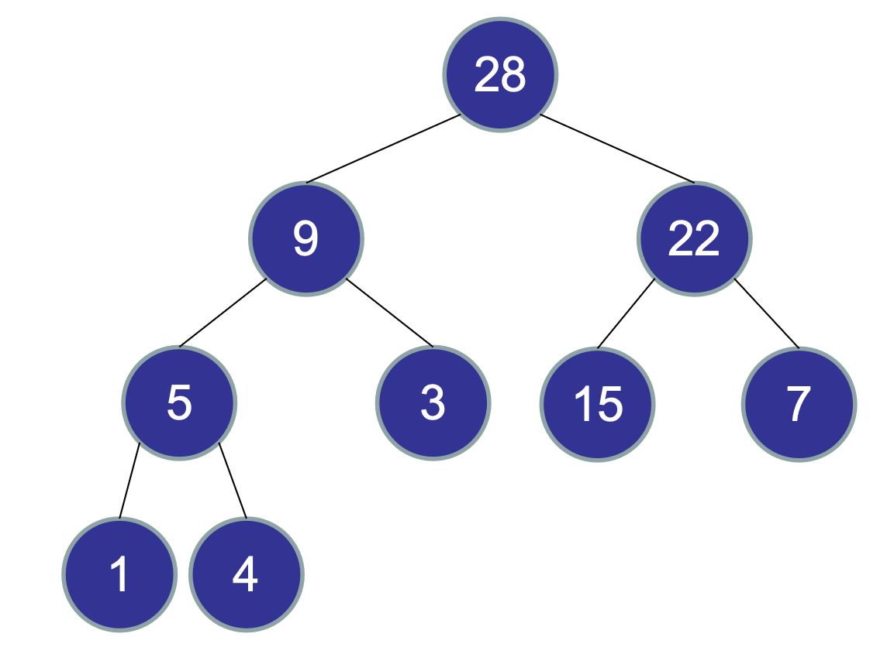
- Heap ordering:
priority[parent] >= priority[child] - Complete binary tree
- Every level is full, except possibly the last
- All nodes are as far left as possible
- Height: O(logn) (maximum height is floor(logn))
- Operations: O(logn)
- Implements a max priority queue
| Return Type | Operation | Description |
|---|---|---|
| void | insert(Key k, Priority p) | insert k with priority p |
| Data | extractMax() | remove key with max priority |
| void | increaseKey(Key k, Priority p) | increase the priority of key k to priority p |
| void | decreaseKey(Key k, Priority p) | reduce the priority of key k to priority p |
| Data | delete(Key k) | delete k from heap |
- left(x) = 2 * x + 1
- right(x) = 2 * x + 2
- parent(x) = floor((x - 1) / 2)
- Where x is the position of the node in the array
Insert
- Add leaf of new node at leftmost position
- Bubble up (swap with parent) until condition
priority[parent] >= priority[child]fulfilled
bubbleUp(Node v) {
while (v != null) {
if (priority(v) > priority(parent(v))) {
swap(v, parent(v));
} else {
return;
}
v = parent(v);
}
}
insert(Priority p, Key k) {
Node v = tree.insert(p, k);
bubbleUp(v);
}
DecreaseKey
- Update priority
- Bubble down (swap with child that has higher priority)
bubbleDown(Node v) {
while (!isLeaf(v)) {
leftP = priority(left(v));
rightP = priority(right(v));
maxP = max(leftP, rightP, priority(v));
if (leftP == max) {
swap(v, left(v));
v = left(v);
} else if (rightP == max) {
swap(v, right(v));
v = right(v);
} else {
return;
}
}
}
Delete
- Swap deleted node with last node (which is last element in array)
- Remove last node
-
Bubble down swapped node 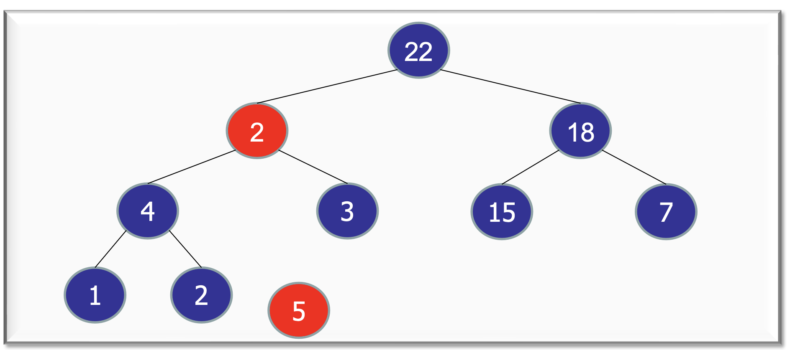
-
ExtractMax:
- delete(root);
Heap vs AVL Tree
- Same asymptotic cost for operations
- Faster real cost (no constant factors)
- Simpler: no rotations
- Slightly better concurrency
HeapSort
- Running time: O(n logn)
- In-place
- Deterministic, and will always take O(n logn)
- Faster than MergeSort, a little slower than QuickSort
-
Not stable
-
Unsorted list --> heap (running time: O(n)), specifically 2 * O(n)
- Base case: each leaf is a heap
- Recursion: siblings + parent nodes = heap (bubbleDown)
// int[] A = array of unsorted integers
for (int i = n - 1; i >= 0; i--) {
bubbleDown(i, A); // O(height), but more than n/2 of nodes are leaves with height = 0
}
- Heap --> sorted list () (running time: O(n logn))
- Fill array from last position to first position, by recursively calling extractMax()
//int[] A = array stored as a heap
for (int i = n - 1; i >= 0; i--) {
int value = extractMax(A); //O(logn)
A[i] = value;
}
Disjoint Set
- Determine if objects are connected
Quick Find: using an int[] componentId
- Store component identifier of each object
- Find: O(1)
- Finds whether p and q are connected
boolean find(int p, int q) {
return(componentId[p] == componentId[q]);
}
- Union: O(n)
- Make p and q have the same componentId
- Traverse the component identifier array: if id = q's id, update to be p's id
void union(int p, int q) {
updateComponent = componentId[q];
for (int i=0; i<componentId.length; i++) {
if (componentId[i] == updateComponent) {
componentId[i] = componentId[p];
}
}
}
Quick Union: using an int[] parent
-
Two objects are connected if they are part of the same tree
-
Find: O(n)
- Traverse up the tree from given node, to find parent
- If final parents are the same, they are connected
boolean find(int p, int q) {
while (parent[p] != p) {
p = parent[p];
}
while (parent[q] != q) {
q = parent[q];
}
return (p == q);
}
- Union: O(n), height of tree can be n
- Traverse up the tree from given node, to find parent
- Set parent of p to be q
void union(int p, int q) {
while (parent[p] != p) {
p = parent[p];
}
while (parent[q] != q) {
q = parent[q];
}
parent[p] = q;
}
Weighted Union
- Choose the larger element to be the parent during union
- Maximum depth of tree: O(logn)
- Running time of find: O(logn)
- Running time of union: O(logn)
union(int p, int q) {
while (parent[p] !=p) {
p = parent[p];
}
while (parent[q] !=q) {
q = parent[q];
}
if (size[p] > size[q]) {
parent[q] = p; // Link q to p
size[p] = size[p] + size[q];
} else {
parent[p] = q; // Link p to q
size[q] = size[p] + size[q];
}
}
Weighted Union with Path Compression
- After finding root, set the parent of each traversed node to the root
- 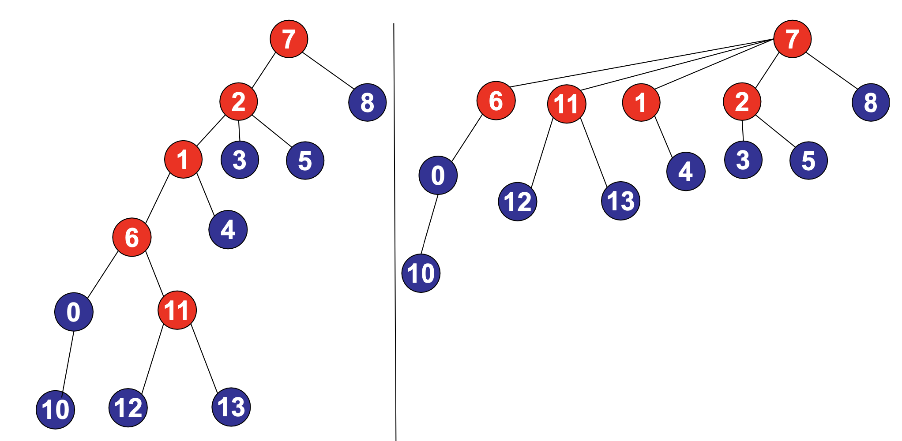
- Tree height is compressed
// Takes O(logn) time
findRoot(int p) {
root = p;
while (parent[root] != root) {
root = parent[root];
}
while (parent[p] != p) {
temp = parent[p];
parent[p] = root;
p = temp;
}
return root;
}
union(int p, int q) {
p = findRoot(p);
q = findRoot(q);
if (size[p] > size[q]) {
parent[q] = p; // Link q to p
size[p] = size[p] + size[q];
} else {
parent[p] = q; // Link p to q
size[q] = size[p] + size[q];
}
}
- Starting from empty, any sequence of m union/find operations on n objects takes: O(n + mα(m, n))time.
- Path compression is helpful with more union/ find operations
- First operation will still take the same amount of time (+ path compression for future operations)
- α = ackermann function (between O(1) and O(logn))
- Running time of find: α(m, n)
- Running time of union: α(m, n)
- 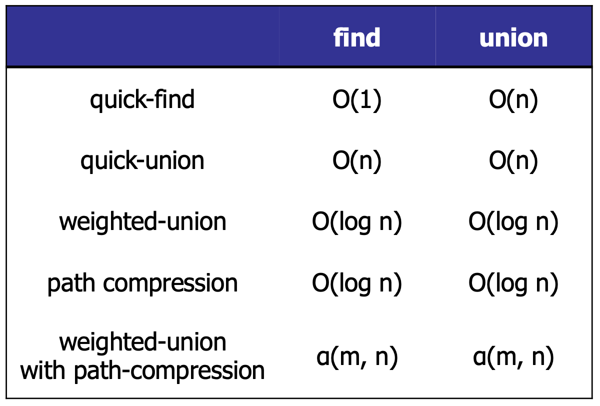